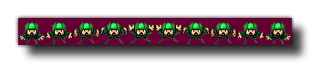

sprite_add(fname, imgnumb, removeback, smooth, xorig, yorig);
| Argument | Description |
|---|---|
| fname | The name (a string file path) of the file to add. |
| imgnum | Use to indicate the number of sub-images (1 for a single image). For gif images, this argument is not used and can be set to 0. |
| removeback | Indicates whether to make all pixels with the background colour (left-bottom pixel) transparent. |
| smooth | Indicates whether to smooth the edges if transparent. |
| xorig | Indicate the x position of the origin in the sprite. |
| yorig | Indicate the y position of the origin in the sprite. |
Returns: Real
With this function you can add an image as a sprite, loading it
from an external source where the image file to be loaded should
always be in either *.png, *.gif or
*.jpg/jpeg format. The function returns the new sprite
index which must then be used in all further codes that relate to
the sprite. If you use this function with HTML5 or are getting an
image from an URL, this function will also generate an asynchronous
event. See
Advanced Use - More About Async Events for more
information.
All images that are to be turned into animated sprites - except for
*.gif (see below) - should have a "strip" format (see the
image below) and it will be split into the number of sub-images
specified following the rule sprite width = strip width / sub
images.  As you can see
in the above image, the sprite has been placed on a dark purple
background, and this can be removed by setting the "removeback"
argument to true. This works by checking the bottom
left pixel of the sprite for the colour there and then uses
that as the colour to be removed. For example, in the above image,
if we had the bottom left pixel colour as green, all the green
parts of the sprite would have been removed and the rest of the
purple background ignored.
If you choose the "removeback" option, you may also want
GameMaker: Studio to smooth the edges of the sprite by
setting the "smooth" argument to true. All this does is
create a semi-transparent border around the edges of the sprite
after it has had its background removed.
Finally you can also specify the x and y origin for the
sprite. This is the point where the sprite is "fixed" onto the
instance that uses it, and is always calculated as relative to the
0,0 top left corner of one sprite sub-image. So, for example, a
sprite that is 32 x 32 pixels with these values set to (16,16) will
have its origin in the center.
If you are adding a *.gif format image, then you only need
to specify the filename and can leave all the other arguments as 0,
but note that only the first image of the GIF will be
loaded.
By default all new sprites have their bounding boxes calculated
automatically (the exact bbox will depend on the size and
transparency of the sprite), however you may wish to customise
this, in which case you should also use the function sprite_collision_mask.
NOTE: When you load a sprite into GameMaker: Studio you
must remember to remove it again (with sprite_delete) when no longer
needed, otherwise there is risk of a memory leak which will slow
down and eventually crash your game.
spr = sprite_add("player_5.png", 16, true, true, 0, 0);
The above code loads a sprite into the game and stores its index in the variable "spr".